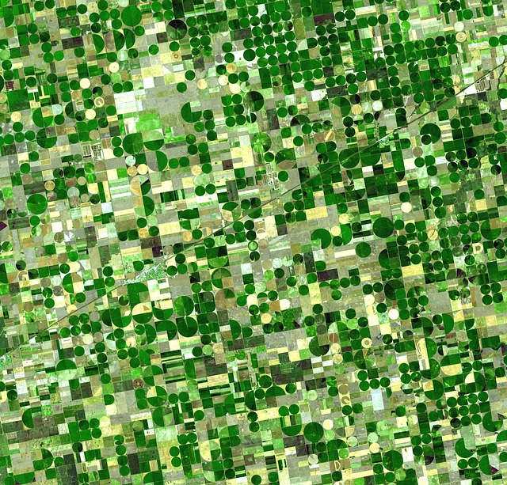
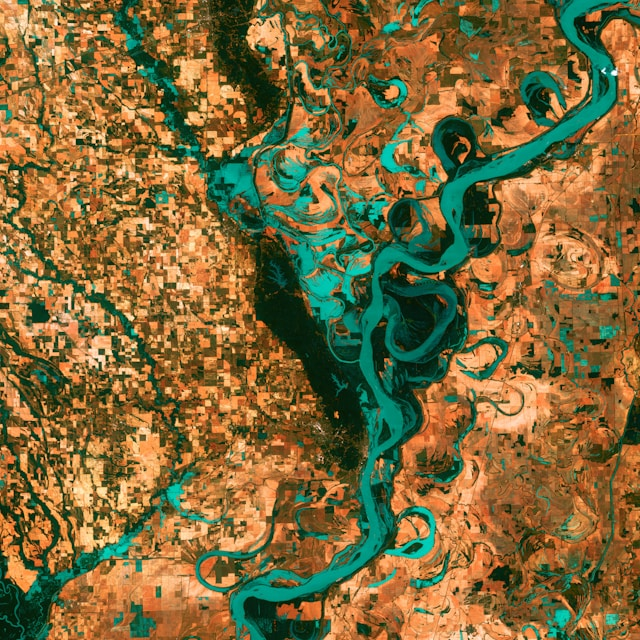

Data-driven Earth discovery
Experts in Earth observation data analytics and modelling.
Ready-to-use APIs and database

GIS and remote sensing software

Machine learning datasets

Spatial analytics tools

Data visualisation and modelling
″Everything is related to everything else, but near things are more related than distant things, as a consequence of accessibility."
Planetary observation at arm's length
Browse our product catalog by clicking that button right over there!